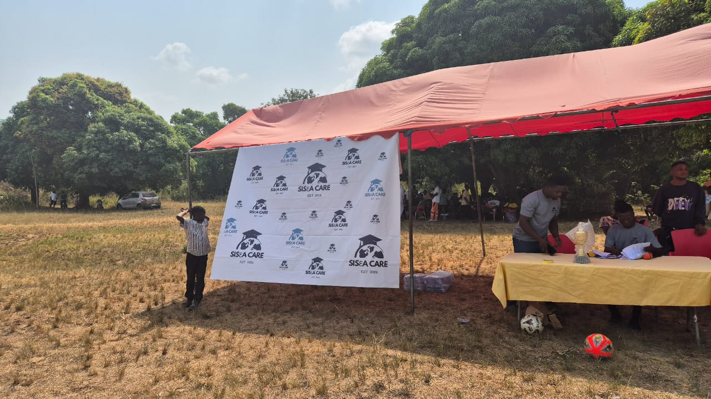
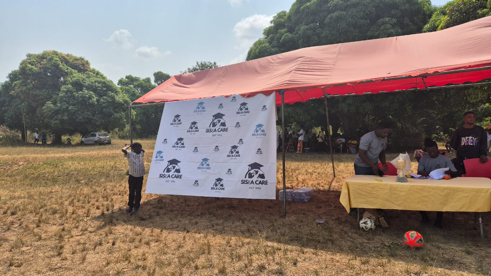

✨ Special Announcement: Coming up, GALAGAMES!
Learn More

CARE!
GIVE TODAY© 2024 All Rights Reserved. Powered by Skyfusion
Sis3aCARE is a non-profit organization dedicated to bridging the educational resource gap in underprivileged schools. We strive to empower students, teachers, and communities by providing essential educational materials, fostering a supportive learning environment, and promoting academic excellence.
Support us today!Sis3a CARE is committed to bridging educational gaps by providing essential resources, enhancing teacher capacity, and fostering literacy and skills development. We advocate for education reforms, promote digital inclusion, and empower communities through parental involvement. Our focus includes supporting girls’ education, creating safe learning environments, and aiding schools affected by disasters. Through these efforts, we aim to ensure every child has equal access to quality education and opportunities for growth.
Clemence Godsway
ClemenceGodsway
© 2024 All Rights Reserved. Powered by Skyfusion
Schools are equipped with modern technology tools like computers and internet access to enhance students' digital literacy. Coding and robotics workshops are also organized to prepare learners for future tech-driven careers.
Learning materials, scholarships, and teacher training programs are provided to improve the quality of education in underserved schools. Mentorship programs inspire students to strive for academic excellence.
Sports facilities are built and renovated to encourage physical activity and teamwork among students. Inter-school competitions are also sponsored to promote talent development and healthy competition.
Regular clean-up campaigns are organized to maintain a clean and healthy school environment. Students are also educated on proper waste management and environmental sustainability practices.
 



We need your help to help the poor children in the country. With your contribution, we can provide them better educational facilities so that they can eventually become responsible citizens of the country.
Every child loves to feel special. We make it possible by celebrating their birthdays with their loved ones. We also celebrate their achievements to inspire them to do better in life and add value wherever they go.
We are committed to feeding every hungry child in the country. We put in every possible effort to make this happen and bring a smile to the face of the children who cannot afford their meals on a daily basis.